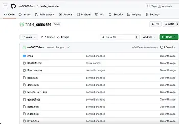
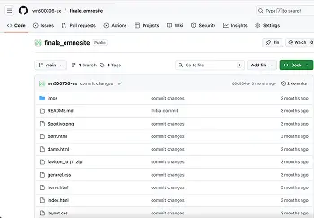
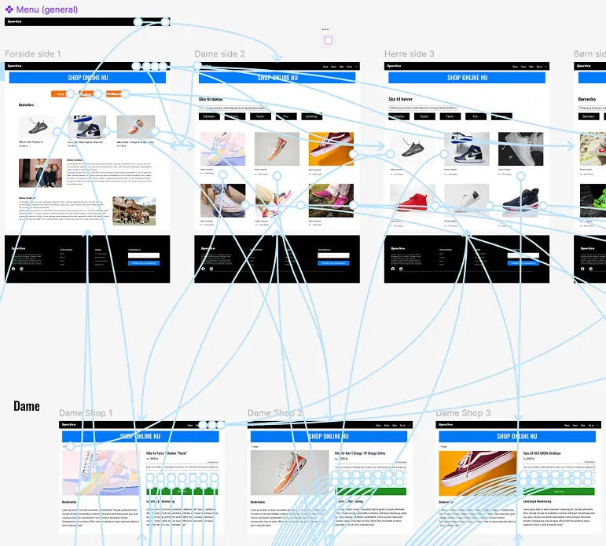
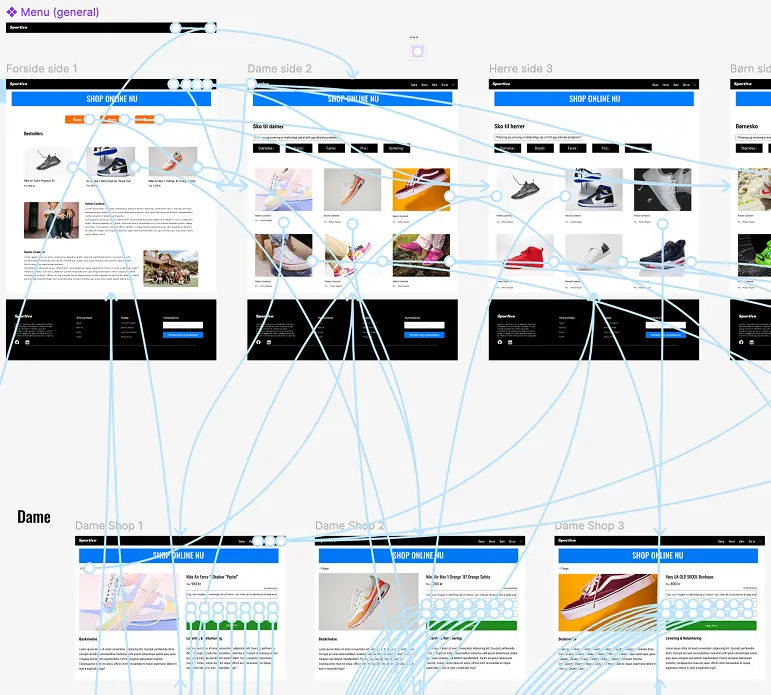

Tema 3 - Grundlæggende UX/UI
TilbageI tema 3 arbejdede jeg med at udvikle et emnesite med fokus på User Experience (brugeroplevelse), og samspillet mellem brugere og brugergrænseflader. Det resulterede i at jeg lærte, hvordan man laver en hjemmeside trin for trin. Fra research og ideudvikling til test og prototype. Her begyndte jeg først med research og ideudvikling, hvor jeg bliver præsenteret til research metoder såsom brainstorming, user stories, desktop research, survey, observation og interview. I starten vil jeg finde et emne og hvem hjemmesiden skulle laves til. Det gjorde jeg ved at bruge brainstorming og userstories, hvilket resulterede i at jeg fandt et bestemt emne, samt hvad brugeren skal kunne på emnesitet.
Derefter arbejdede jeg på det visuelle udtryk, hvor jeg lavede et moodboard for at finde inspiration og en stemning til sitet. Oven i det lavede jeg også et styletile for at finde specifikke dele i forhold til farver, typografi og knapper (UI), hvilket gjorde det nemmere at holde et rødt tråd for den samme design hele vejen igennem processen. Derudover det på dette trin i processen begyndte jeg at udvikle en mere tydelige løsning ud fra det arbejde, jeg havde arbejdede på tidligere. Her arbejdede jeg med wireframes og sketches for at planlægge sitets opbygning, struktur, brugerflow og hvordan information er sorteret, før man besluttede, hvordan det endelige design skulle visuelt se ud.
Jeg byggede så derefter videre på Figma, hvor jeg lavede components ud fra mit styletile og en prototype, som var klikbar til test. Det hjalp mig med at forstå, hvordan tidlige udkast kan afsløre problemer i forhold til struktur, som påvirker brugerflow og hjælpe med at forme til en endelig løsning. Prototypen blev så udviklede undervejs fra low-fidelity til high-fidelity, og blev løbende justeret, samt udviklet fra en enkel version til en mere færdiggjort løsning. Til sidst arbejdede jeg og testede prototypen på brugere med brugertest. Jeg brugte blandt andet 5-sekunders test for at finde ud af, om emnesitet var let at forstå og nem at bruge, som bruger. Samtidig med tænke-højt test for at afsløre, hvordan brugeren oplever emnesitets design, navigation og content, samt hvad der forvirrer og driller brugeren. Ud fra testene blev jeg gjort opmærksom på, hvor brugerne havde svært ved. Især i layout og navigation, hvilket resulterede i jeg lavede ændringer til emnesitet, så den blev mere brugervenlig til brugerne.
Alt i alt har jeg lært i dette tema, at man kan udvikle en hjemmeside trin for trin, fra research til ide også til test. Her har jeg fået en klar forståelse for, hvordan man kan anvende userstories til at tage udgangspunkt i brugerens perspektiv. Yderligere har jeg også lært, hvordan moodboard og styletile er vigtige værktøjer til at holde en rød tråd gennem hele processen i designet. Samtidig med at prototyper er gode til at opdage og afsløre problemer tidligt i processen, så man undgår noget bøvl senere i ens arbejde. Til sidst gav brugertest mig en indblik i, hvordan selv de mindste ændringer kan være med til at gøre en stor forskel for brugervenligheden.
Emnesite
 

 

Klik på knapperne for at læse mere om projektet